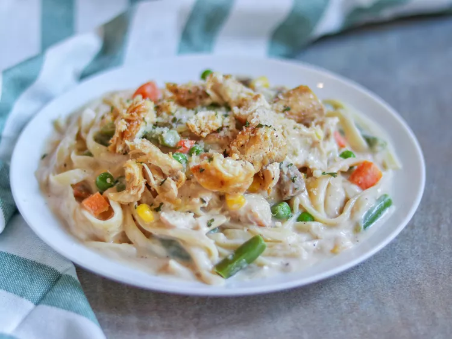

Chicken Alfredo

This chicken Alfredo recipe with jar sauce is a quick and easy dinner for
those hectic nights. For extra flavor, cook the chicken with lemon pepper
and seasoning salt.
Ingredients
- 1lb uncooked fettuccine or linguine
- boneless chicken breast halves, cooked and cubed
- 16oz jar Alfredo-style pasta sauce
- 10oz frozen mixed vegetables
- 4.5 oz sliced mushrooms
- ⅓ cup milk
Cooking Directions
-
Fill a large pot with lightly salted water and bring to a rolling boil.
Cook fettuccine at a boil until tender yet firm to the bite, about 8
minutes. Drain well.
-
While the pasta is cooking, place cubed cooked chicken, Alfredo sauce,
frozen vegetables, mushrooms, and milk in a large saucepan over
medium-low heat. Cook and stir until chicken is heated through and
vegetables are tender.
- Serve warm Alfredo and chicken sauce over cooked noodles.